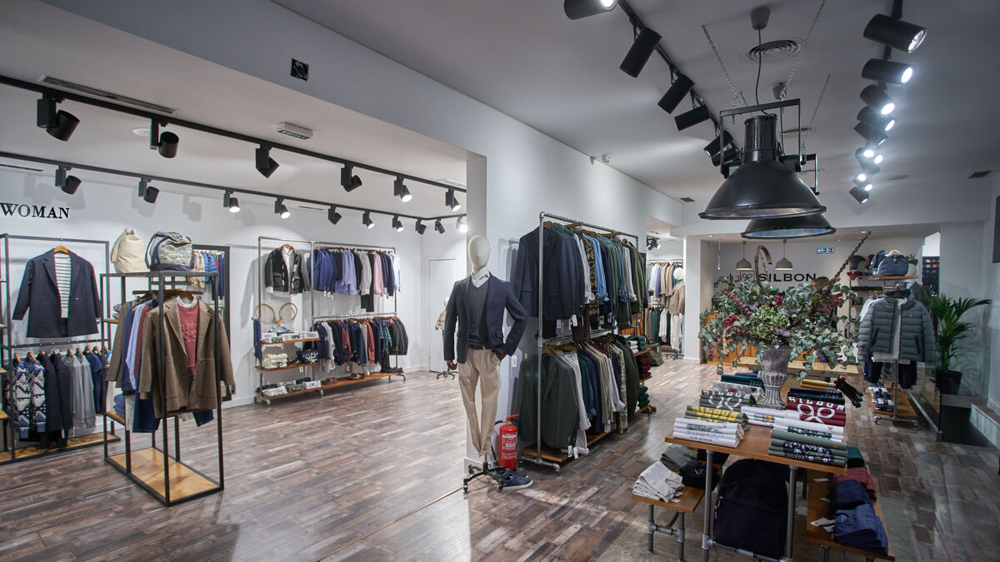
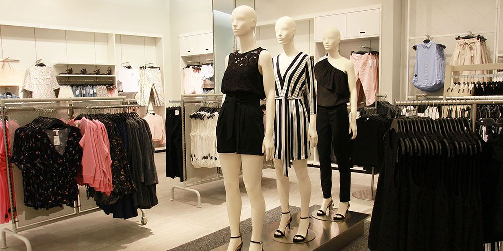
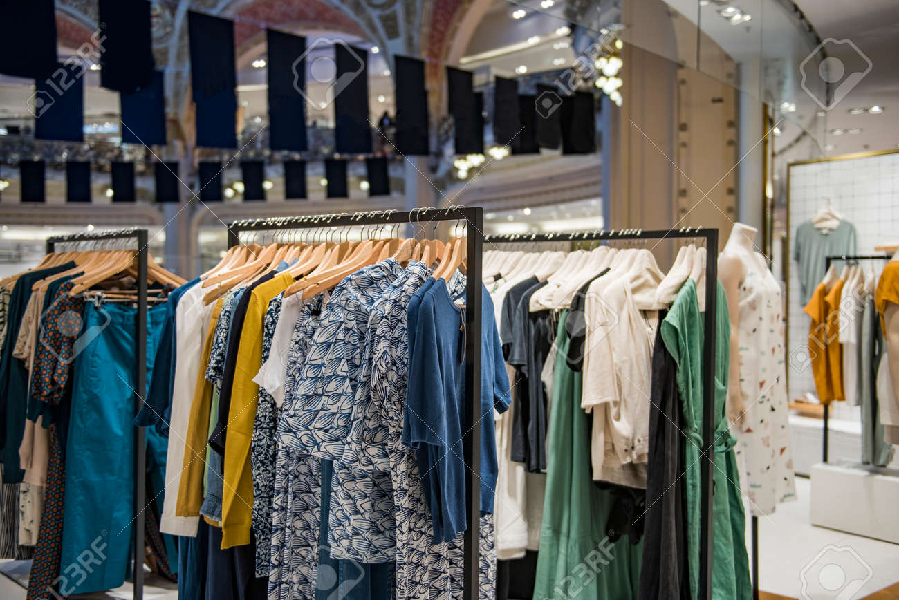
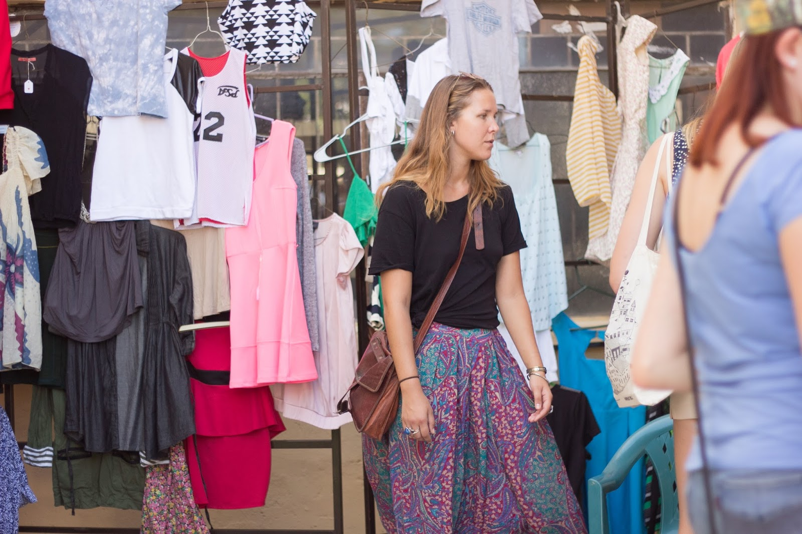

Inicio
Mas información
Donativos
tienda


¿DE QUE MANERA FUNCIONA TAKE IT CLOTING?
Esta industria abarca entonces la confección de prendas, calzados y otras piezas que usan las personas para vestirse. Es una empresa dedicada a la venta y donacion de articulos de ropa en la cual podras encontrar ropa de muy bajo precio con gran calidad y mantenimiento.
La industria textil destaca, frente a otros sectores, por la gran cantidad de mano de obra que emplea a lo largo de todo el mundo. Además, al necesitar maquinaria liviana, puede instalarse en cualquier lugar del globo donde pueda aprovechar el menor coste por hora hombre de trabajo. Esto último es motivo de preocupación por ciertos analistas que consideran que las grandes empresas textiles pueden explotar, pagando salarios bajos, a trabajadores en países en vías de desarrollo.
Debido a esto nuestra empresa esta originando un nuevo planteamiento a la sociedad sobre el cual va consistiendo en el reciclaje de todo tipo de objeto textil. 
En conclusión, deberemos realizar compras más responsables, siendo recomendable conocer de dónde viene y cómo se produce el producto que vamos a comprar y, en la medida de lo posible, evitar hacer compras innecesarias. 
De esto parte nuestro proyecto "TAKE IT CLOTING", ya que en conjunto con los demas equipos nuestra pagina habla respecto a la industria textil, con la finalidad de comercializarla y donarla. Ademas nosotros tambien nos enfocamos en informarles su calidad y su elaboracion, para ello creamos este sitio web para apoder informar a mas personas sin mucho esfuerzo.